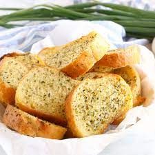

Garlic Bread

Garlic bread, a culinary delight that accompanies many Italian feasts, is an irresistible creation that beckons with its savory allure. It's a flavorful masterpiece that transforms a simple loaf of Italian bread into a vessel of pure indulgence. Picture this: the bread, sliced and toasted to perfection, becomes a canvas for a harmonious blend of minced garlic, fragrant fresh parsley, grated Parmesan cheese, and a subtle hint of salt and pepper.
As the garlic bread bakes, it metamorphoses into a tantalizing creation with a crispy, golden exterior, while the inside remains warm, buttery, and infused with the aromatic symphony of garlic and Parmesan. The sight of this garlicky marvel, with its inviting aroma, is a prelude to the burst of flavors that awaits. Each bite is a journey of sensations that dance on your palate, a comforting embrace in edible form. Garlic bread isn't just a side; it's a celebration of culinary finesse, a timeless classic that adds a touch of magic to every Italian meal.
Ingredients
- 1 loaf of Italian bread
- 1⁄2 cup (1 stick) unsalted butter, softened
- 4 cloves garlic, minced
- 2 tablespoons fresh parsley, chopped
- 1⁄4 cup grated Parmesan cheese
- 1⁄4 teaspoon salt
- 1⁄4 teaspoon black pepper
Steps
- Preheat the Oven:
- Preheat your oven to 375°F (190°C).
- Prepare the Garlic Butter:
- In a mixing bowl, combine the softened butter, minced garlic, chopped parsley, grated Parmesan cheese, salt, and black pepper.
- Stir until all the ingredients are well mixed and the garlic butter is creamy.
- Slice and Spread:
- Cut the Italian bread loaf in half lengthwise.
- Spread the garlic butter mixture evenly over the cut sides of the bread.
- Bake the Garlic Bread:
- Place the buttered bread halves on a baking sheet.
- Bake in the preheated oven for about 10-15 minutes or until the bread is toasted and the garlic butter is melted and bubbly.
- Slice and Serve:
- Remove the garlic bread from the oven and let it cool for a minute.
- Slice the garlic bread into individual servings.
- Serve alongside your delicious lasagna for a perfect Italian meal!